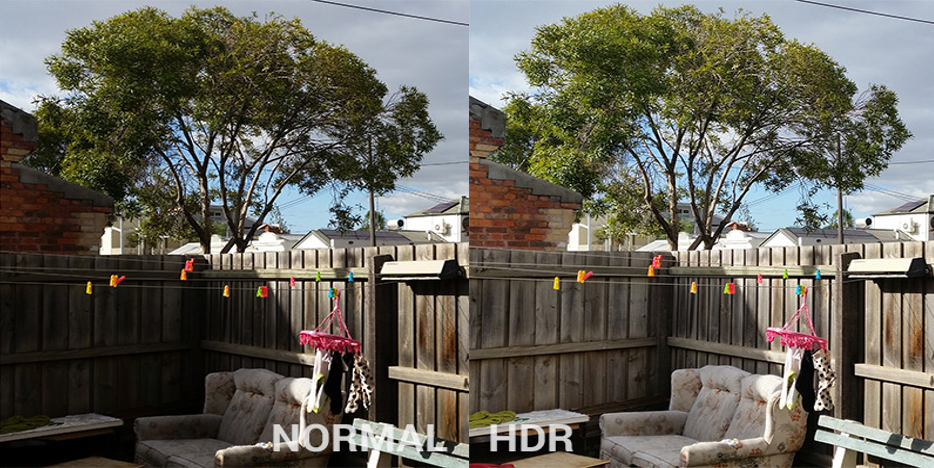
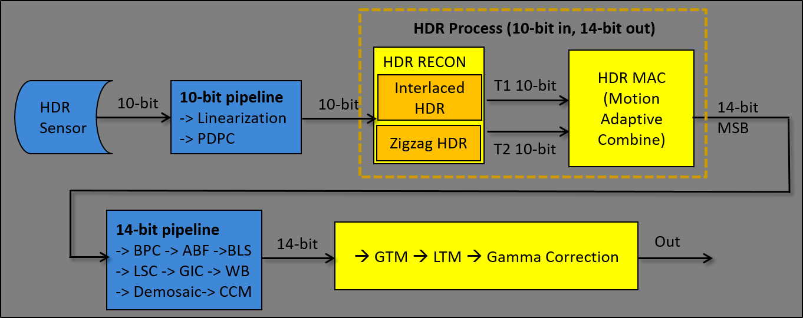

Scenes that have a wide dynamic range of luminosity may contain information that
is not obvious on devices. As such, the resulting images may lack detail in the light or
dark regions of the image. If the camera sensor supports high dynamic range (HDR), an
HDR image can be taken by combining images that are underexposed and overexposed as
follows:
- The underexposed image provides details in the highlights region
of the scene.
- The overexposed image provides details from the shadows region
of the scene
The images are then reconstructed and blended to produce an image that more
accurately reproduces the scene.
Figure : (L) Normal or non-HDR image, (R) HDR image

The HDR process consists of two sub-modules:
- HDR Recon – Interlaced HDR and zigzag HDR reconstruction
- HDR MAC – Motion adaptive combination

The input to the process is 10-bit zigzag data where T1 is the image
with longer exposure and T2 is the image with shorter exposure. The output is scaled-up
HDR Bayer to the full 14-bit range.